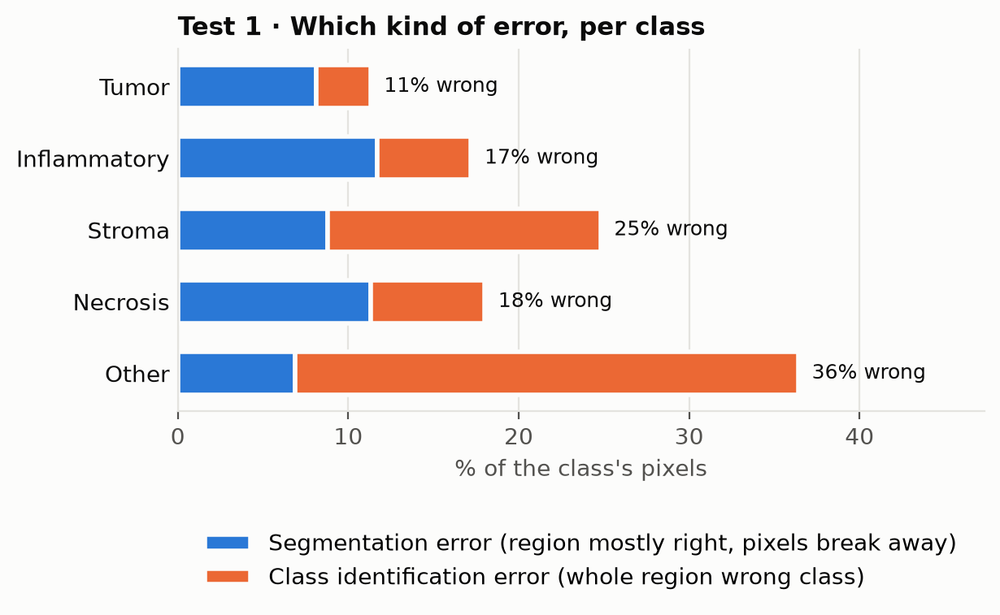

Deliverable 7
November 23, 2026 · PanNuke (cell nuclei) and BCSS (tissue regions)
Recap of results
mIoU, change vs. the base model in brackets. — = not run (yet).
| Method | PanNuke · Breast test | BCSS · dev | BCSS · val |
|---|---|---|---|
| Base | 0.4323 | 0.7067 | 0.6489 |
| Pair (HW) | — | 0.7097 (+0.0030) | 0.6507 (+0.0019) |
| Pair (DD) | 0.4324 (+0.0001) | 0.7090 (+0.0023) | 0.6506 (+0.0018) |
| Hier | 0.4323 (0.0000) | 0.7107 (+0.0040) | 0.6517 (+0.0028) |
| Hier+Decay | 0.4323 (0.0000) | 0.7108 (+0.0041) | running |
| Cluster | 0.4344 (+0.0020) | 0.7163 (+0.0095) | running |
| Presence | — | 0.7229 (+0.0162) | 0.6550 (+0.0061) |
| Pres+Clust | 0.4484 (+0.0161) | 0.7242 (+0.0175) | 0.6564 (+0.0075) |

Sources: PanNuke experiments/pannuke_wcsp/organ_wcsp/breast/evaluation.json (branch organ-wcsp-breast, Nov 22); BCSS run summaries (λ = 8).
Problem
| Problem | Dataset | What goes wrong | What could fix it |
|---|---|---|---|
| Segmentation | BCSS | One true region is broken into many pieces | Train the U-Net to keep regions whole |
| Class identification | BCSS | A whole region gets the wrong class, or a class that isn't in the tile | Strong data-derived rules (e.g. presence), not light smoothing |
| Mixed tissue types | PanNuke | Patches from all organs share one model and one prior, so no organ is fit well | Run per tissue type: fit and tune on one organ at a time |

PanNuke: fitting on Breast only beats fitting on all tissue types, on the same 169 Breast test patches (Global WCSP 0.4384 → Breast WCSP 0.4484).

BCSS preliminary tests
Full-resolution U-Net · 185 BCSS dev tiles · no training
Test 1 · Which problem causes the errors?
Method: for each true region, check whether the U-Net predicts the right class for most of it.
- Yes: its wrong pixels are segmentation errors (stray pieces, borders).
- No: its wrong pixels are class identification errors (the whole region is misread).

Test 2 · What is fixing each problem worth?
Method: make one problem perfect, keep the U-Net for everything else, and re-score.
- Only class set fixed: each tile is told which classes it contains; the U-Net still decides where they go.
- Only segmentation fixed: each true region is labeled as one piece, with the class the U-Net predicts on average over it.
Fixing both would give the ground truth (1.0), so each bar shows what one problem costs.

Current experiments: fixing the U-Net itself
Same training recipe as the cross-entropy baseline; only the loss changes. Score = raw U-Net, no post-processing.
| Model | Added loss | Fixes | Dev mIoU |
|---|---|---|---|
| A (baseline) | none | — | 0.6679 |
| B | Region loss: pixels in the same true region should agree | Segmentation | — |
| C | Presence loss: predict which classes are in the tile | Class identification | — |